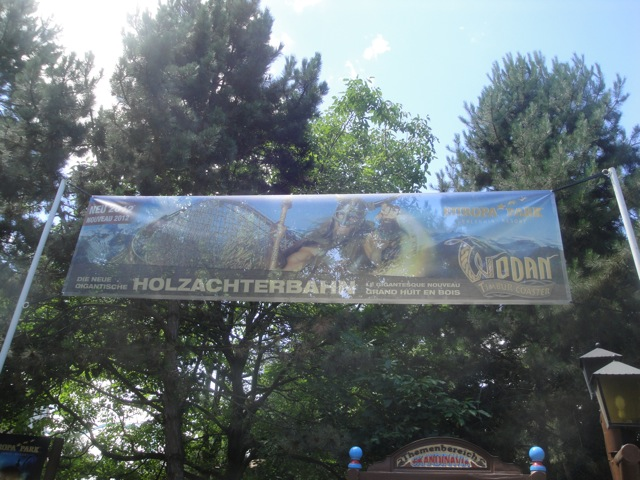

| |
Wodan Review
We're here at Europa Park. Today, we're here to review Wodan. We arrive in the station and take a look at the station fly by, and realize "Damn! It's going pretty fast!!!" Then you pull down the lap bar and away we go. We roll down a couple little bumps before turning and heading up the lifthill. Hey, at least there's a pre-lift at all. We get a great view of one of Europa Park's awesome hotels as well as that water ride that's not a credit amongst all the farmland. We go around a turn, gain some speed, and then get sucked into a big wooden pit. That first drop really gives us some speed and we can feel it as we go FLYING!!! You know, at this point, it kind of reminds me of a giant Apocalypse. But don't worry. This ride is better. We head up a big hill, get some floater air, before dipping down and heading around a turn, passing by Blue Fire before dropping down to the ground where we see a pretty rock tunnel that we get to take. TAKE THE TUNNEL!!! We head around a nice agressive turn, TAKE THE STATION FLYBY!!!, and then rise up a small hill before heading around another turn and sharply dropping towards the ground. We get another oppertunity to TAKE THE SHED!!!! before ripping out and heading around a nice turnaround, giving us a really nice view of Atlantica Supersplash. We rip over a small little hill. There's no airtime, but I still like it. Plus, the setting alone is just fantastic. We go around another sharp turn and head up a hill, with a little bit of S action. Hey, this ride really goes heavy on the laterals. And speaking of that, we head around another turn, but sadly, it's not quite as crazy as all the curves right before it. We rise up into another small hill, and sadly, that's the final brakes. Aww. It's over. And it's a fun ride. It's a really fun ride. It may not be the craziest ride, but I'm all down for Wodan. While ridewise, I'd say it's in the middle of the road as far as GCIs go, by beauty standards, it EASILY takes the win as their best looking ride and just blends in with the rest of Europa Park BEAUTIFULLY!!! It's a really fun ride and I definetly would recommend you check it out when you're visiting Europa Park.
8/10
Location: Europa Park
Opened: 2012
Built by: Great Coasters International
Last Ridden: June 25, 2012
Wodan Photos



|